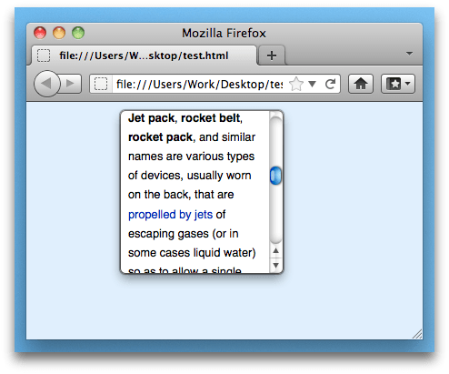
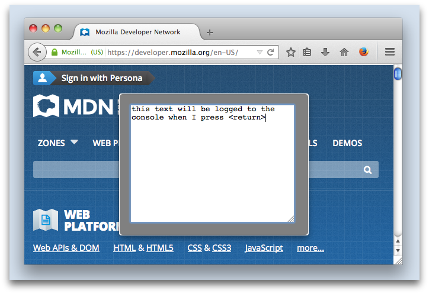
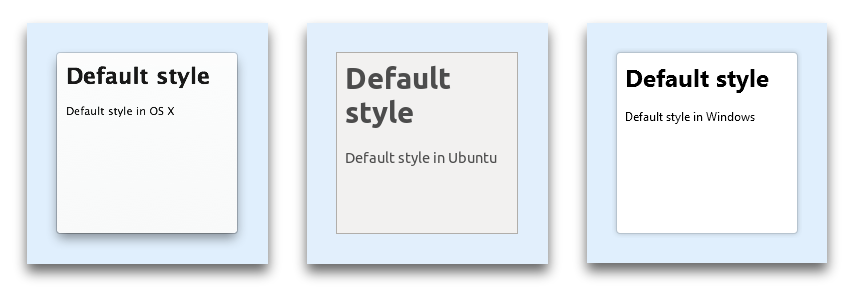

Stable
Creates transient dialogs to implement part of an add-on's user interface.
Usage
This module exports a single constructor function Panel() which constructs a new panel.
A panel is a dialog. Its content is specified as HTML and you can execute scripts in it, so the appearance and behavior of the panel is limited only by what you can do using HTML, CSS, and JavaScript.
The screenshot below shows a panel whose content is built from the list of currently open tabs:

Panels are useful for presenting temporary interfaces to users in a way that is easier for users to ignore and dismiss than a modal dialog, since panels are hidden the moment users interact with parts of the application interface outside them.
A panel's content is loaded as soon as it is created, before the panel is shown, and the content remains loaded when a panel is hidden, so it is possible to keep a panel around in the background, updating its content as appropriate in preparation for the next time it is shown.
Your add-on can receive notifications when a panel is shown or hidden by listening to its show and hide events.
Opening a panel will close an already opened panel. If you want to close an existing panel without opening a new one, you can call the hide() or the destroy() method.
Panel content
The panel's content is specified as HTML, which is loaded from the URL supplied in the contentURL option to the panel's constructor.
You can load remote HTML into the panel:
var panel = require("sdk/panel").Panel({
width: 180,
height: 180,
contentURL: "https://en.wikipedia.org/w/index.php?title=Jetpack&useformat=mobile"
});
panel.show();

You can also load HTML that's been packaged with your add-on, and this is most probably how you will create dialogs. To do this, save the HTML in your add-on's data directory and load it using the data.url() method exported by the self module, like this:
var panel = require("sdk/panel").Panel({
contentURL: require("sdk/self").data.url("myFile.html")
});
panel.show();
From Firefox 34, you can use "./myFile.html" as an alias for self.data.url("myFile.html"). So you can rewrite the above code like this:
var panel = require("sdk/panel").Panel({
contentURL: "./myFile.html"
});
panel.show();
Panel positioning
By default the panel appears in the center of the currently active browser window. You can position the panel by passing a position to the panel's constructor or to its show() method.
Attaching panels to buttons
You can attach a panel to a toggle button by passing the button itself as the position option to the panel's show() method or to its constructor:
var { ToggleButton } = require('sdk/ui/button/toggle');
var panels = require("sdk/panel");
var self = require("sdk/self");
var button = ToggleButton({
id: "my-button",
label: "my button",
icon: {
"16": "./icon-16.png",
"32": "./icon-32.png",
"64": "./icon-64.png"
},
onChange: handleChange
});
var panel = panels.Panel({
contentURL: self.data.url("panel.html"),
onHide: handleHide
});
function handleChange(state) {
if (state.checked) {
panel.show({
position: button
});
}
}
function handleHide() {
button.state('window', {checked: false});
}

Updating panel content
You can update the panel's content by:
- sending a message to a content script that updates the DOM in the same document. This is usually the best approach.
- embedding an iframe in the panel, and changing its document
- setting the panel's
contentURLproperty. However, doing this will cause any content scripts to be unloaded and then reloaded, so it may be less efficient, and you'll lose any state associated with the scripts.
Scripting panel content
You can't directly access your panel's content from your main add-on code. To access the panel's content, you need to load a script into the panel. In the SDK these scripts are called "content scripts" because they're explicitly used for interacting with web content.
While content scripts can access the content they're attached to, they can't use the SDK's APIs. So implementing a complete solution usually means you have to send messages between the content script and the main add-on code.
-
You can specify one or more content scripts to load into a panel using the
contentScriptorcontentScriptFileoptions to thePanel()constructor. -
You can communicate with the script using either the
postMessage()API or (preferably, usually) theportAPI.
For example, here's an add-on whose content script intercepts mouse clicks on links inside the panel, and sends the target URL to the main add-on code. The content script sends messages using self.port.emit() and the add-on script receives them using panel.port.on().
var myScript = "window.addEventListener('click', function(event) {" +
" var t = event.target;" +
" if (t.nodeName == 'A')" +
" self.port.emit('click-link', t.toString());" +
"}, false);"
var panel = require("sdk/panel").Panel({
contentURL: "http://www.bbc.co.uk/mobile/index.html",
contentScript: myScript
});
panel.port.on("click-link", function(url) {
console.log(url);
});
panel.show();
This example uses contentScript to supply the script as a string. It's usually better practice to use contentScriptFile, which is a URL pointing to a script file saved under your add-on's data directory.
Warning: Unless your content script is extremely simple and consists only of a static string, don't use contentScript: if you do, you may have problems getting your add-on approved on AMO.
Instead, keep the script in a separate file and load it using contentScriptFile. This makes your code easier to maintain, secure, debug and review.
Getting user input
Note: This example uses the action button API, which is only available from Firefox 29 onwards.
The following add-on adds a button which displays a panel when clicked. The panel just contains a <textarea> element: when the user presses the return key, the contents of the <textarea> is sent to the main add-on code.

The add-on consists of six files:
main.js: the main add-on code, that creates the button and panelget-text.js: the content script that interacts with the panel contenttext-entry.html: the panel content itself, specified as HTMLicon-16.png,icon-32.png, andicon-64.png: icons for the button in three different sizes
"main.js" is saved in your add-on's lib directory, and the other files go in your add-on's data directory:
my-addon/
data/
get-text.js
icon-16.png
icon-32.png
icon-64.png
text-entry.html
lib/
main.js
The "main.js" looks like this:
var data = require("sdk/self").data;
// Construct a panel, loading its content from the "text-entry.html"
// file in the "data" directory, and loading the "get-text.js" script
// into it.
var text_entry = require("sdk/panel").Panel({
contentURL: data.url("text-entry.html"),
contentScriptFile: data.url("get-text.js")
});
// Create a button
require("sdk/ui/button/action").ActionButton({
id: "show-panel",
label: "Show Panel",
icon: {
"16": "./icon-16.png",
"32": "./icon-32.png",
"64": "./icon-64.png"
},
onClick: handleClick
});
// Show the panel when the user clicks the button.
function handleClick(state) {
text_entry.show();
}
// When the panel is displayed it generated an event called
// "show": we will listen for that event and when it happens,
// send our own "show" event to the panel's script, so the
// script can prepare the panel for display.
text_entry.on("show", function() {
text_entry.port.emit("show");
});
// Listen for messages called "text-entered" coming from
// the content script. The message payload is the text the user
// entered.
// In this implementation we'll just log the text to the console.
text_entry.port.on("text-entered", function (text) {
console.log(text);
text_entry.hide();
});
The content script "get-text.js" looks like this:
// When the user hits return, send the "text-entered"
// message to main.js.
// The message payload is the contents of the edit box.
var textArea = document.getElementById("edit-box");
textArea.addEventListener('keyup', function onkeyup(event) {
if (event.keyCode == 13) {
// Remove the newline.
text = textArea.value.replace(/(\r\n|\n|\r)/gm,"");
self.port.emit("text-entered", text);
textArea.value = '';
}
}, false);
// Listen for the "show" event being sent from the
// main add-on code. It means that the panel's about
// to be shown.
//
// Set the focus to the text area so the user can
// just start typing.
self.port.on("show", function onShow() {
textArea.focus();
});
Finally, the "text-entry.html" file defines the <textarea> element:
<html>
<head>
<style type="text/css" media="all">
textarea {
margin: 10px;
}
body {
background-color: gray;
}
</style>
</head>
<body>
<textarea rows="13" cols="33" id="edit-box"></textarea>
</body>
</html>
Finally, save these three icon files to the "data" directory:
| icon-16.png | |
| icon-32.png | |
| icon-64.png |
To learn much more about content scripts, see the Working with Content Scripts guide.
Scripting trusted panel content
Note: This example uses the action button API, which is only available from Firefox 29 onwards.
We've already seen that you can package HTML files in your add-on's data directory and use them to define the panel's content. We can call this "trusted" content, because unlike content loaded from a source outside the add-on, the add-on author knows exactly what it's doing. To interact with trusted content you don't need to use content scripts: you can just include a script from the HTML file in the normal way, using script tags.
Like a content script, these scripts can communicate with the add-on code using the postMessage() API or the port API. The crucial difference is that these scripts access the postMessage and port objects through the addon object, whereas content scripts access them through the self object.
To show the difference, we can easily convert the text-entry add-on above to use normal page scripts instead of content scripts.
The main add-on code is exactly the same as the main add-on code in the previous example, except that we don't attach a content script:
var data = require("sdk/self").data;
// Construct a panel, loading its content from the "text-entry.html"
// file in the "data" directory, and loading the "get-text.js" script
// into it.
var text_entry = require("sdk/panel").Panel({
contentURL: data.url("text-entry.html")
});
// Create a button
require("sdk/ui/button/action").ActionButton({
id: "show-panel",
label: "Show Panel",
icon: {
"16": "./icon-16.png",
"32": "./icon-32.png",
"64": "./icon-64.png"
},
onClick: handleClick
});
// Show the panel when the user clicks the button.
function handleClick(state) {
text_entry.show();
}
// When the panel is displayed it generated an event called
// "show": we will listen for that event and when it happens,
// send our own "show" event to the panel's script, so the
// script can prepare the panel for display.
text_entry.on("show", function() {
text_entry.port.emit("show");
});
// Listen for messages called "text-entered" coming from
// the content script. The message payload is the text the user
// entered.
// In this implementation we'll just log the text to the console.
text_entry.port.on("text-entered", function (text) {
console.log(text);
text_entry.hide();
});
The page script is exactly the same as the content script above, except that instead of self, we use addon to access the messaging APIs:
// When the user hits return, send the "text-entered"
// message to main.js.
// The message payload is the contents of the edit box.
var textArea = document.getElementById("edit-box");
textArea.addEventListener('keyup', function onkeyup(event) {
if (event.keyCode == 13) {
// Remove the newline.
text = textArea.value.replace(/(\r\n|\n|\r)/gm,"");
addon.port.emit("text-entered", text);
textArea.value = '';
}
}, false);
// Listen for the "show" event being sent from the
// main add-on code. It means that the panel's about
// to be shown.
//
// Set the focus to the text area so the user can
// just start typing.
addon.port.on("show", function onShow() {
textArea.focus();
});
Finally, the HTML file now references "get-text.js" inside a <script> tag:
<html>
<head>
<style type="text/css" media="all">
textarea {
margin: 10px;
}
body {
background-color: gray;
}
</style>
</head>
<body>
<textarea rows="13" cols="33" id="edit-box"></textarea>
<script src="get-text.js"></script>
</body>
</html>
Styling panel content
The panel's default style is different for each operating system:
This helps to ensure that the panel's style is consistent with the dialogs displayed by Firefox and other applications, but means you need to take care when applying your own styles.
If the panel's content is packaged along with your add-on and specified using an HTML file in your data directory, you can style it by embedding CSS directly in the HTML file or by referencing a CSS file stored under data:
<!DOCTYPE HTML>
<html>
<head>
<link href="panel-style.css" type="text/css" rel="stylesheet">
</head>
<body>
My panel content
</body>
</html>
From Firefox 31 onwards, you can style panel content using the contentStyle or contentStyleFile options. You can use these options even if the panel content is not packaged along with the add-on:
var panel = require("sdk/panel").Panel({
contentURL: "https://en.wikipedia.org/w/index.php?title=Jetpack&useformat=mobile",
contentStyle: "body { border: 3px solid blue; }"
});
panel.show();
var self = require("sdk/self");
var panel = require("sdk/panel").Panel({
contentURL: "https://en.wikipedia.org/w/index.php?title=Jetpack&useformat=mobile",
contentStyleFile: self.data.url("panel-style.css")
});
panel.show();
Private browsing
If your add-on has not opted into private browsing, and it calls panel.show() when the currently active window is a private window, then the panel will not be shown.
Panel limitations
Although panels can host HTML documents, they are not implemented as browser tabs, so many things that work in normal web pages do not work inside panels:
- Prior to Firefox 33, you don't get a context menu. From Firefox 33 you can enable a context menu by passing
contextMenu: trueto the panel's constructor. - The HTML
<select>element doesn't work. - The HTML
<datalist>element doesn't give you autocomplete suggestions (bug 918600). - You can't embed Flash (bug 952578).
- You can't provide tooltips using
titleattributes (bug 918600). - Security warning pages (the "This Connection is Untrusted" warning) does not work, so panels which trigger it will be broken (bug 1031554).
- Mouse button shortcuts, such as using the middle button to open a link in a new page, don't work.
- Scrolling using keyboard doesn't work properly (bug 1001914)
Globals
Constructors
Panel(options)
Creates a panel.
Parameters
options : object
Optional options:
| Name | Type | |
|---|---|---|
width |
number |
The width of the panel in pixels. Optional. |
height |
number |
The height of the panel in pixels. Optional. |
position |
object, button, widget |
The position of the panel. Ignored if the panel is opened by a widget. This may be one of three things:
The position object has one or more of the following properties: The default alignment along each axis is centered: so to display a panel centred along the vertical or horizontal axis, just omit that axis: // Show the panel centered horizontally and
// aligned to the bottom of the content area
require("sdk/panel").Panel({
position: {
bottom: 0
}
}).show();
// Show the panel centered vertically and
// aligned to the left of the content area
require("sdk/panel").Panel({
position: {
left: 0
}
}).show();
// Centered panel, default behavior
require("sdk/panel").Panel({}).show();
As with the CSS // Show the panel centered horizontally, with:
// - the top edge 40px from the top
// of the content window
// - the bottom edge 100px from the bottom
// of the content window
require("sdk/panel").Panel({
position: {
top: 40,
bottom: 100
}
}).show();
If you set both // Show the panel centered horizontally, with:
// - the top edge 40px from the top
// of the content window
// - a height of 400px
require("sdk/panel").Panel({
position: {
top: 40,
bottom: 100,
},
height: 400
}).show();
// This is equivalent to:
require("panel").Panel({
position {
top: 40
},
height: 400
}).show();
The same principle is applied in the horizontal axis with |
focus |
boolean |
Set to |
contentURL |
string,URL |
The URL of the content to load in the panel. That is, they can't refer to remote scripts. The URLs are usually constructed using From Firefox 34, you can use |
allow |
object |
An optional object describing permissions for the content. It should contain a single key named |
contentScriptFile |
string,array |
A URL or an array of URLs. The URLs point to scripts to load into the panel. The scripts must be packaged with the add-on under the add-on's From Firefox 34, you can use Content scripts specified by this property are loaded before those specified by the |
contentScript |
string,array |
A string or an array of strings containing the texts of content scripts to load. Content scripts specified by this property are loaded after those specified by the |
contentStyleFile |
string, array |
A URL or an array of URLs. The URLs point to CSS stylesheets to load into the panel. The stylesheets must be packaged with the add-on under the add-on's Stylesheets specified by this property are loaded before those specified by the |
contentStyle |
string, array |
A string or an array of strings containing the texts of stylesheets to load. Stylesheets specified by this property are loaded after those specified by the |
contentScriptWhen |
string |
When to load the content scripts. This may take one of the following values:
This property is optional and defaults to "end". |
contentScriptOptions |
object |
Read-only value exposed to content scripts under Any kind of jsonable value (object, array, string, etc.) can be used here. Optional. |
contextMenu |
boolean |
New in Firefox 33 Whether to show a context menu when the user context-clicks in the panel. The context menu will be the same one that's displayed in web pages. Optional, defaults to |
onMessage |
function |
Include this to listen to the panel's |
onShow |
function |
Include this to listen to the panel's |
onHide |
function |
Include this to listen to the panel's |
Panel
The Panel object represents a floating modal dialog that can by an add-on to present user interface content.
Once a panel object has been created it can be shown and hidden using its show() and hide() methods. Once a panel is no longer needed it can be deactivated using destroy().
The content of a panel is specified using the contentURL option. An add-on can interact with the content of a panel using content scripts which it supplies in the contentScript and/or contentScriptFile options. For example, a content script could create a menu and send the user's selection to the add-on.
Methods
destroy()
Destroys the panel, unloading any content that was loaded in it. Once destroyed, the panel can no longer be used. If you just want to hide the panel and might show it later, use hide instead.
postMessage(message)
Sends a message to the content scripts.
Parameters
message : value
The message to send. Must be stringifiable to JSON.
show(options)
Displays the panel.
If the options argument is given, it will be shallow merged with the options provided in the constructor: the options passed in the show method takes precedence.
Passing options here is useful for making temporary changes without touching the default values.
Parameters
options : object
Optional options:
| Name | Type | |
|---|---|---|
| width | number |
The width of the panel in pixels. Optional. |
| height | number |
The height of the panel in pixels. Optional. |
| position | object |
The position of the panel. Optional. See Panel's options for further details. |
| focus | boolean |
Set to |
hide()
Stops displaying the panel.
resize(width, height)
Resizes the panel.
Parameters
width : number
The new width of the panel in pixels.
height : number
The new height of the panel in pixels.
on(type, listener)
Registers an event listener with the panel.
Parameters
type : string
The type of event to listen for.
listener : function
The listener function that handles the event.
removeListener(type, listener)
Unregisters an event listener from the panel.
Parameters
type : string
The type of event for which listener was registered.
listener : function
The listener function that was registered.
Properties
port
EventEmitter object that allows you to:
- send events to the content script using the
port.emitfunction - receive events from the content script using the
port.onfunction
See the guide to communicating using port for details.
isShowing
Tells if the panel is currently shown or not. This property is read-only.
height
The height of the panel in pixels.
width
The width of the panel in pixels.
focus
Whether or not focus will be taken away when the panel is shown. This property is read-only.
contentURL
The URL of content loaded into the panel. This can point to local content loaded from your add-on's "data" directory or remote content. Setting it updates the panel's content immediately.
allow
An object describing permissions for the content. It contains a single key named script whose value is a boolean that indicates whether or not to execute script in the content.
contentScriptFile
A local file URL or an array of local file URLs of content scripts to load. Content scripts specified by this property are loaded before those specified by the contentScript property.
contentScript
A string or an array of strings containing the texts of content scripts to load. Content scripts specified by this property are loaded after those specified by the contentScriptFile property.
contentScriptWhen
When to load the content scripts. This may have one of the following values:
- "start": load content scripts immediately after the document element for the panel is inserted into the DOM, but before the DOM content itself has been loaded
- "ready": load content scripts once DOM content has been loaded, corresponding to the DOMContentLoaded event
- "end": load content scripts once all the content (DOM, JS, CSS, images) for the panel has been loaded, at the time the window.onload event fires
contentScriptOptions
Read-only value exposed to content scripts under addon.options property.
Any kind of jsonable value (object, array, string, etc.) can be used here. Optional.
Events
show
This event is emitted when the panel is shown.
hide
This event is emitted when the panel is hidden.
message
If you listen to this event you can receive message events from content scripts associated with this panel. When a content script posts a message using self.postMessage(), the message is delivered to the add-on code in the panel's message event.
Arguments
value : Listeners are passed a single argument which is the message posted from the content script. The message can be any JSON-serializable value.
error
This event is emitted when an uncaught runtime error occurs in one of the panel's content scripts.
Arguments
Error : Listeners are passed a single argument, the Error object.
{kind=link}
{kind=link}
{kind=link}
{kind=link}
{kind=link}
{kind=link}
{kind=link}